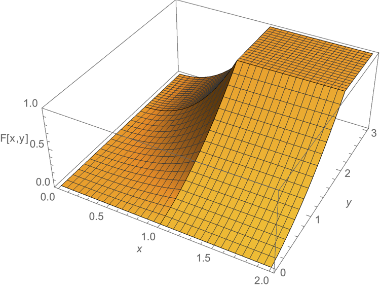

Skip to main content
\( \newcommand{\lt}{<} \newcommand{\gt}{>} \newcommand{\amp}{&} \)

Mathematical Statistics I:
Based heavily on Freund's Mathematical Statistics
Sean M. Laverty
Contents
Index
Prev
Up
Next
Contents
Prev
Up
Next
Front Matter
Colophon
Author Biography
Dedication
Acknowledgements
Preface
Contributors to the 0\(^\mathrm{th}\) Edition
1
Counting
Counting
2
Probability
Probability
3
Discrete Random Variables
Probability distributions
Mathematical expectation of discrete random variables
Special probability distributions
4
Continuous Random Variables
Probability densities
Expectation of continuous random variables
Special probability densities
Multivariate continuous densities
Back Matter
A
Definitions
B
Theorems
C
Examples
D
GNU Free Documentation License
Index
Colophon
Authored in PreTeXt
Section
1.1
Counting
¶
Some words.
Definition
1.1.1
.
\(1, 2, 3, \dots\)